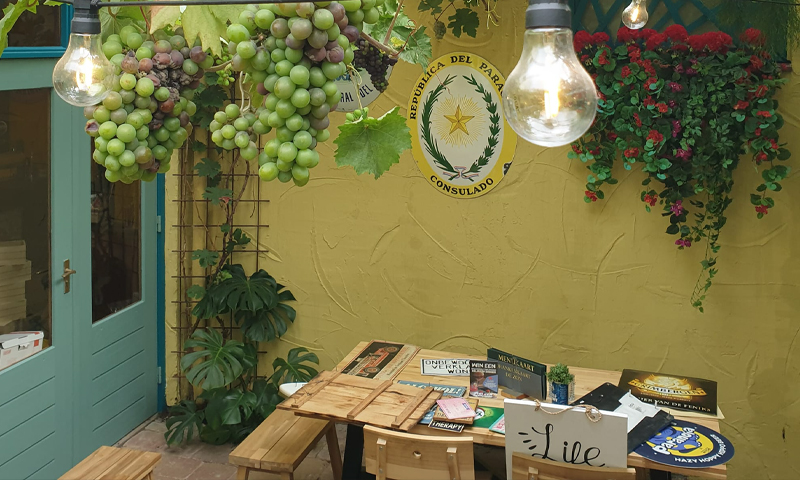
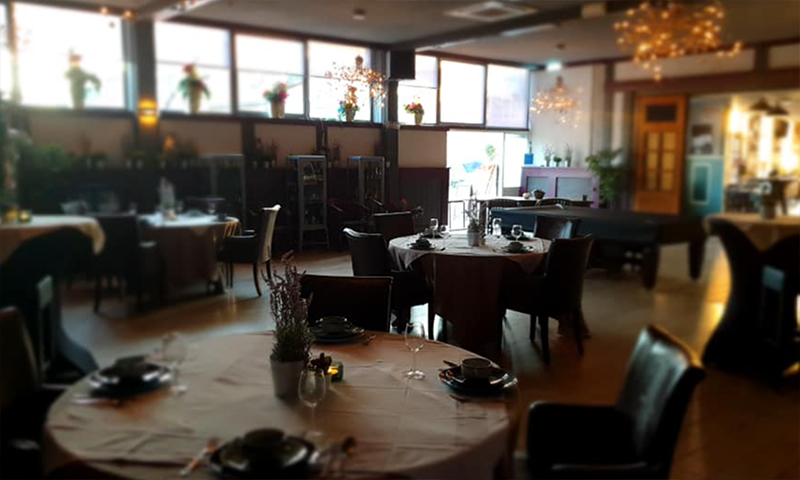
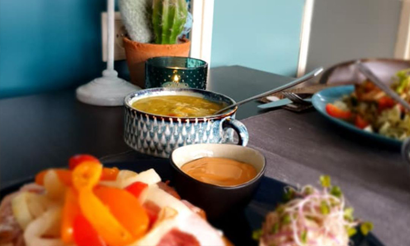
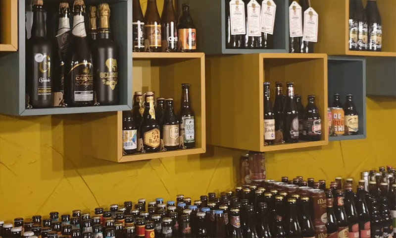
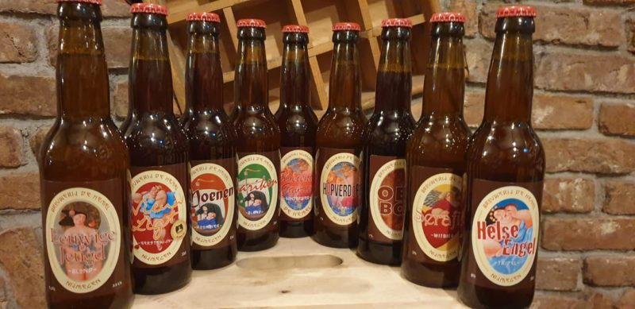
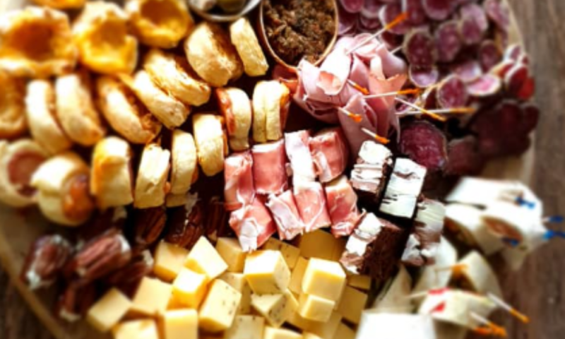

Hoogstraat 56, Overasselt
De Zon
Eetcafé, zaal en slijterij
Lekker lunchen, smakelijk dineren, proeven van onze vele speciaalbieren, feesten in onze zaal of gezellig samen in het café. Op een steenworp van de Overasseltse en Hatertse Vennen.

Veelzijdigheid is onze slogan
Iedereen is van harte welkom in eetcafé en zalencentrum De Zon. Voor een twaalfuurtje na een fietstocht door de Vennen, een diner met de familie, een bierproeverij met vrienden of een bruiloft voor tweehonderd gasten.

Het eetcafé
Geniet van onze mooie selectie van smakelijke gerechten. Tijdens de lunch serveren we luxe belegde broodjes en maaltijdsalades. Een echte favoriet bij onze gasten is het bekende twaalfuurtje: drie boterhammen met ham, kaas en een kroket met mosterd, een kopje soep en een bolletje van oma's salade.
Onze keuken is zes dagen per week open van 12.00 tot 21.00 uur. Op dinsdag zijn we gesloten.
Thuisbasis van
- Biljartvereniging De Zon
- Dartvereniging De Uitsmijters
- Carnavalsvereniging De Strandjutters
- Het Sint Antonius Abt Gilde
Is jouw vereniging op zoek naar een vaste plek? Neem contact met ons op.
De binnentuin
Achter het eetcafé kom je in de sfeervolle binnentuin helemaal tot rust. Hier geniet je ook op een regenachtige dag van de druivenranken die langs de muur en het plafond groeien. Voor een kopje koffie, een lunch, een diner of een borrel.
Vergaderen in de tuin
De binnentuin is af te sluiten en is zo een fijne kleine vergaderzaal: voor een teamvergadering, een brainstormsessie of een zakelijk gesprek in een informele sfeer.

Slijterij De Zon
Meer dan 600 verschillende speciaalbieren. Leuk om te geven, te krijgen of om lekker te proeven in onze binnentuin.
Speciaalbieren onderscheiden zich van traditionele bieren door hun smaken, ingrediënten en brouwmethoden. Ons hele assortiment staat op Untappd; zoek daar op Slijterij De Zon.
Slijterij open: maandag en woensdag t/m zondag 12.00 – 21.00, dinsdag gesloten.

Een paar bierstijlen om mee te beginnen
- Witbier
- Licht, troebel bier met kruidige en fruitige tonen, vaak op smaak gebracht met koriander en sinaasappelschil.
- Blond
- Verfrissend en toegankelijk, een goede keuze voor wie net begint. Past bij veel gerechten.
- Dubbel
- Vaak verbonden met trappistenbrouwerijen, waar monniken volgens eeuwenoude recepten brouwen.
- Tripel
- Krachtig en complex, om langzaam van te genieten. Mooi bij zeevruchten, kruidige kazen en desserts.
- Quadrupel
- Nog zwaarder en sterker dan de tripel. Past bij stevige gerechten zoals wild, stoofvlees en sterke kazen.
- IPA
- Sterk hopkarakter en bitterheid, van klassiek Engels tot intens Amerikaans.
- Amber
- Genoemd naar de amberkleurige tint. Elke brouwerij geeft er een eigen draai aan.
- Fruit
- Verfrissend en fruitig, zoet, zuur of allebei. Heerlijk op warme zomerdagen.
- Stout
- Donker en geroosterd, van droge Irish stout tot romige imperial stout.
- Porter
- Traditionele Engelse stijl uit de 18e eeuw, met diepe moutigheid en een geroosterd karakter.
- Barrel-aged
- Gerijpt in houten, meestal eikenhouten vaten. Voor liefhebbers een delicatesse.
- 0.0
- Smaak verschilt sterk per merk, dus proef gerust een paar om je favoriet te vinden.

Bierproeverij 34,95 p.p.
Zes speciaalbieren, afgestemd op jouw smaak, met drie rondes hapjes. Van lichte pilsners tot donkere stouts. Liever zelf kiezen uit de slijterij? Dat kan, eventueel met een meerprijs. We passen de proeverij ook aan, bijvoorbeeld met alleen Nederlandse bieren of één bepaalde stijl.
Leuk voor een avond uit met vrienden, als cadeau, als bedrijfsuitje of voor een vrijgezellenfeest. Alleen voor 18 jaar en ouder.
Boeken: bel 024 622 15 84, mail info@dezonoverasselt.nl of loop even binnen.

Zon voor thuis
Onze plank, jouw feestje. Een borrelplank met koude hapjes: diverse kaasjes van het Lattenbos, fuet en andere vleessoorten, wraps, olijfjes en eigen kaaskoekjes.
15,00 per persoon, plus 15,00 borg voor de plank.
Bestel op tijd vooraf: minimaal twee dagen van tevoren. Bel 024 622 15 84 of mail info@dezonoverasselt.nl.
Zaalverhuur
Een zaal voor een grote groep of juist een intieme vergaderruimte. Onze zaal biedt plaats aan maximaal 200 gasten en met schermen maken we hem kleiner voor kleine groepen. Alles wordt bediend vanuit het eetcafé.
Vergaderen
Tafels, stoelen en een beamer voor je laptop staan klaar. Overdag vergaderen en 's avonds privé dineren, of de vergadering combineren met een lunch of diner.
Private dining
Uit eten met vrienden en kinderen, de 85e verjaardag van oma, een 12,5-jarig huwelijksfeest of een babyshower: met schermen wordt de zaal een eigen eetkamer.
Feestzaal
Van verjaardag tot personeelsfeest. Een vaste privébar met ons eigen personeel, hapjes en drankjes bespreken we vooraf, en podium en muziekinstallatie mag je gebruiken. Tot 200 gasten.
Trouwen in De Zon
De Zon is een officiële trouwlocatie van de gemeente Heumen. Je kunt hier dus ook je huwelijk laten voltrekken.
We liggen aan de rand van de Overasseltse en Hatertse Vennen, een prachtige plek voor een bruidsreportage tussen bos, heide en vennen.
- Zaal voor 200 gasten met vast podium en licht- en geluidsinstallatie
- Vaste bar, bediend door ons eigen personeel
- Aparte, privé ingang vanaf de parkeerplaats, waar we je avondgasten met een glaasje bubbels ontvangen
- Ruimte voor een dj of live optreden, met een dansvloer bij het podium
- Een veelzijdig diner waarbij we rekening houden met eetwensen; je eigen plannen zijn bespreekbaar
- Eén aanspreekpunt, van ontvangst tot feest
The morning after: in de omgeving zijn genoeg slaapplaatsen, van camping en B&B tot hotel.
Kom vrijblijvend kennismaken. We stemmen alles af op jullie wensen en budget.
Agenda
- Prinsreceptie CV De Strandjutters
- Kerstdiner bekijk het menu
- Pronkzitting CV De Strandjutters (besloten)
- Carnaval
- Slamm opent de zonnige zomer: Slamm Coverband, gratis entree
- Paasbrunch
- Bier-Zon-derdag, speciaalbierfestival
- Festival De Zon
Wij zoeken medewerkers
Horecamedewerker bediening en keuken
Je verwelkomt gasten, neemt bestellingen op en serveert, en je helpt in de keuken met voorbereiden en afwassen. Je houdt je werkplek schoon.
Wie we zoeken
- Horeca-ervaring is een pluspunt
- Flexibel en stressbestendig
- Een teamspeler
- Leergierig
Wat we bieden
- Een afwisselende baan in bediening én keuken
- Flexibele werktijden
- Marktconform salaris
- Goede secundaire voorwaarden
Interesse? Loop even binnen voor een kennismaking, of mail naar info@dezonoverasselt.nl.
Reserveren en contact
Reserveren doe je telefonisch, per mail of door even binnen te lopen.
024 622 15 84
info@dezonoverasselt.nl
6611 BZ Overasselt
Café
| maandag | 12.00 – 01.00 |
|---|---|
| dinsdag | gesloten |
| woensdag | 12.00 – 01.00 |
| donderdag | 12.00 – 01.00 |
| vrijdag | 12.00 – 01.00 |
| zaterdag | 12.00 – 01.00 |
| zondag | vanaf 12.00 |
Keuken
12.00 – 21.00, dinsdag gesloten
Slijterij
12.00 – 21.00, dinsdag gesloten
Let op de aangepaste tijden eind november en begin december.